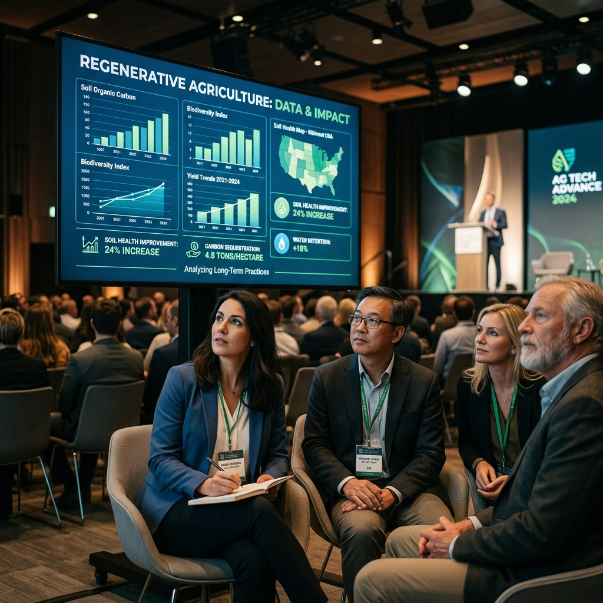
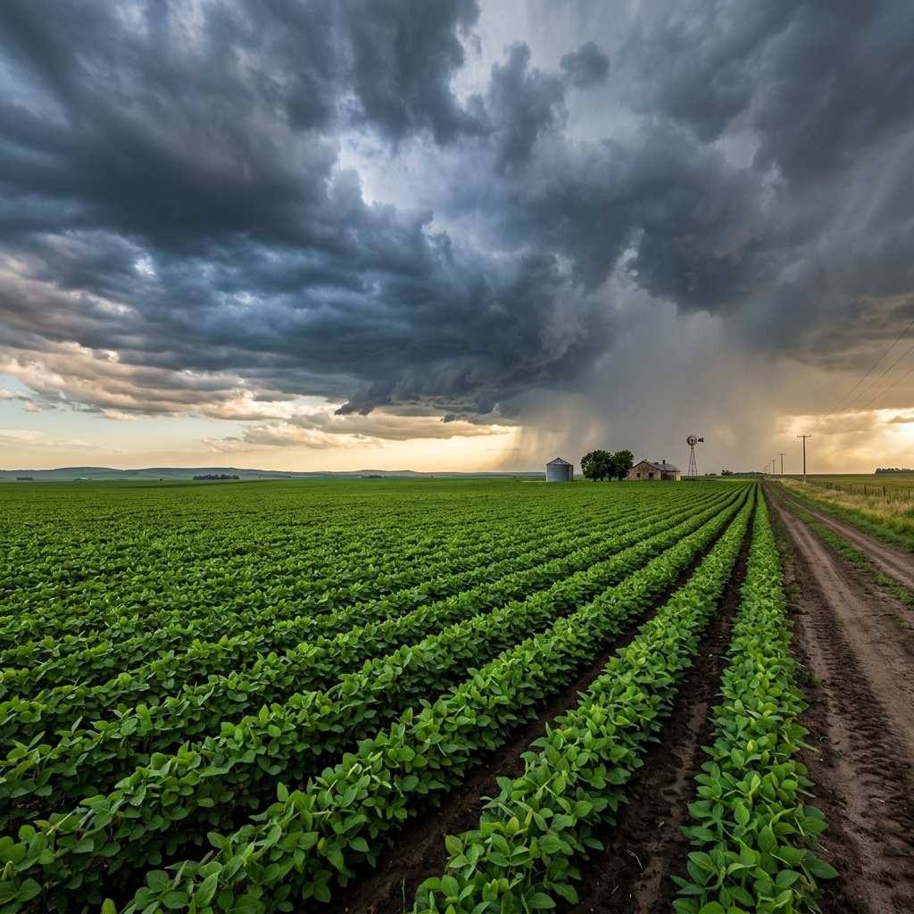
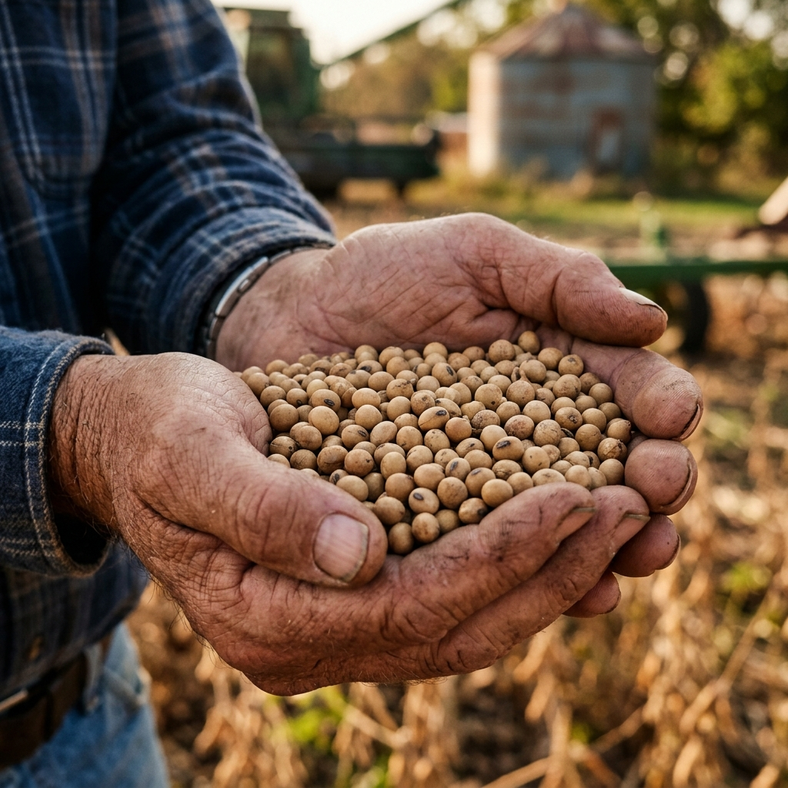

Eventos
Balance del Congreso Aapresid 2026
Perspectivas muy positivas para la campaña 26/27, con un fuerte enfoque en innovación y agricultura regenerativa.
Leer más →Servicios profesionales adaptados al agro.
Planificación y seguimiento de cultivos.
Soluciones integrales para productores agropecuarios.
Optimización de recursos y procesos.
En Agroelsalado acompañamos productores y empresas con herramientas innovadoras y atención personalizada.
Nuestros pilares fundamentales y hacia dónde vamos.
Liderar la transformación del agro creando soluciones inteligentes que impulsan productividad, innovación y crecimiento sostenible.
Desarrollar una comunidad colaborativa que integra talento, inversión y futuro para impulsar nuevas oportunidades de crecimiento.
Asumimos cada desafío con responsabilidad, profesionalismo y enfoque en resultados.
Mantenete informado con las últimas noticias y tendencias del sector agropecuario.

Perspectivas muy positivas para la campaña 26/27, con un fuerte enfoque en innovación y agricultura regenerativa.
Leer más →
Los pronósticos internacionales confirman la llegada del fenómeno para la segunda mitad del año, mejorando las reservas de agua.
Leer más →
La incertidumbre climática global y la firme demanda externa impulsan los valores de la oleaginosa por encima de los $508.000.
Leer más →